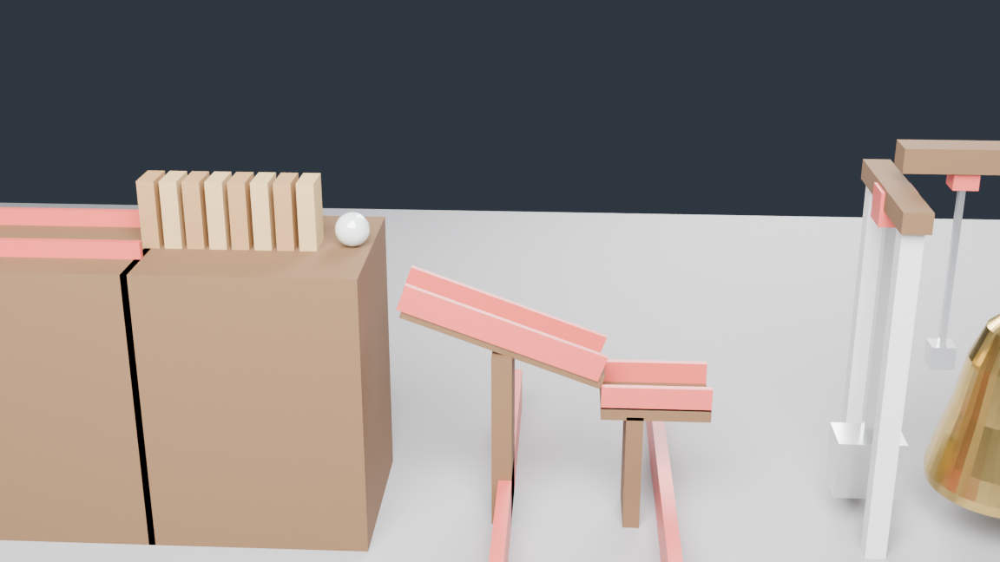
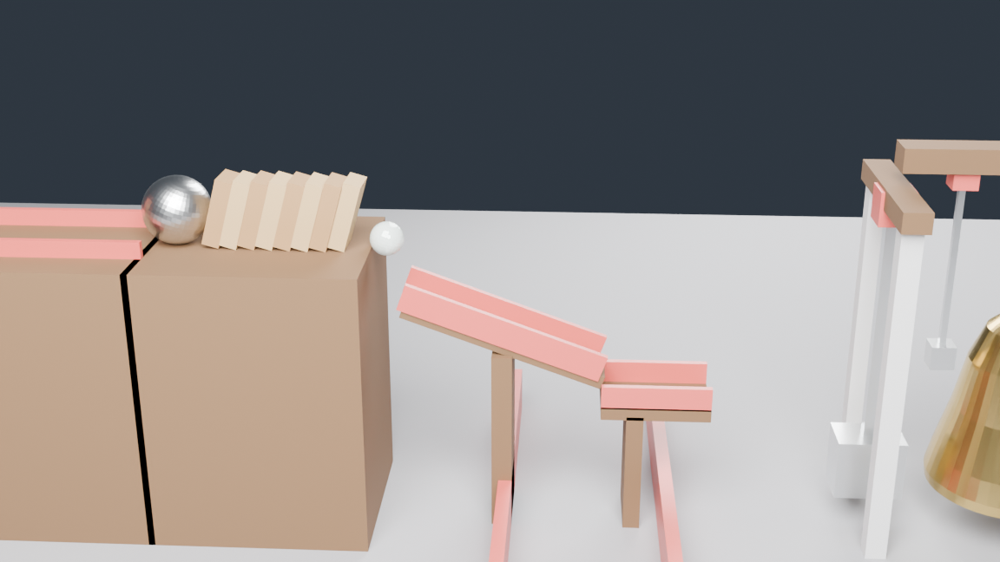
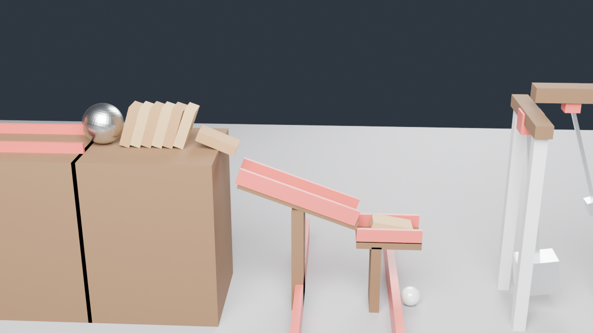
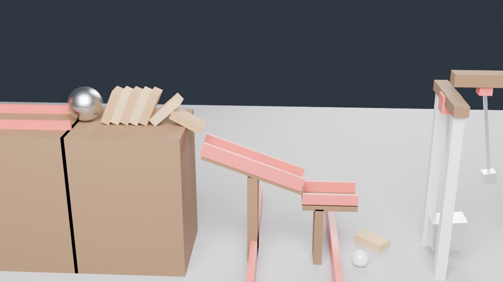

Машина Голдберга: от шара — до звона колокола
Полностью физическая цепочка в Blender 4.5 LTS: ни одного анимированного ключевого кадра — только гравитация, столкновения, трение и три шарнира. Финал: молоток-маятник бьёт в латунный колокол, тот качается на 34° и звонит в два боковых страйкера.
Цепочка (SVG-схема трассы)
Ключевые кадры (рендер Cycles)




Видео и звук
Звук синтезирован по телеметрии симуляции: моменты ударов страйкеров
становятся «динь», сила удара задаёт громкость; удар молотка — низкий «бонг»
(26 событий, см. scripts/bell_sound.py).
Телеметрия симуляции
Данные — из work/goldberg_log.json: покадровые позиции, углы
и скорости всех звеньев. Каждая точка = 2 кадра (1/12 с).
Углы маятников
Скорости
Параметры звеньев
| Звено | Объекты | Массы | Ключевые настройки |
|---|---|---|---|
| ① Горка-1 | Ramp1 30°, rails | passive | μ=0.3, шар отпускается на кадре 6 (kinematic→dynamic) |
| ② Столы + домино | TableA/B, Dom0–7 | 0.15 кг × 8 | μ стола-B 0.9: домино падают, а не скользят |
| ③④ Горка-2 + жёлоб | Ramp2 20°, Chute | passive | шар2 (m=0.5, μ=0.05) летит баллистически с обреза |
| ⑤ Молоток | Hammer | 0.30 кг | шарнир Y, L=0.8 м; origin в голове = центр масс |
| ⑥ Колокол | Bell, Strikers | 0.90 / 0.05 кг | полый профиль вращения, стенка 28 мм; 2 страйкера на шарнирах |
Технические находки (проверено экспериментально)
Ось HINGE — локальная Z хоста
Ось шарнира задаётся не мировой, а локальной Z-осью объекта-хоста констрейнта; пивот = его позиция. Якорь поворачивается на 90° по X, чтобы ось стала мировой Y.
collision_margin
Дефолт 0.04 м создаёт фантомные контакты при зазорах < 4 см. Везде поставлена маржа 0.004 — «двойные» соударения исчезли.
Центр масс = origin
У rigid body центр масс совпадает с origin объекта. Молоток: origin в голове, шток тянется вверх к пивоту — маятник качается сам.
Знак наклона горки
rot=(0, +A, 0) опускает +X-конец плоскости вниз: шар едет в +X.
Проверяется по вектору качения.
Домино: падать, а не скользить
Комбинация трений ~√(μ₁·μ₂): под домино стол «липкий» (0.9), а шар скользкий (0.05) — домино валятся цепочкой и толкают шар2 с края.
Стабильность солвера
substeps=10, solver_iterations=60, damping 0.04; маятники без sleep
(use_deactivation=False), остальные тела засыпают на 0.08 м/с.
Воспроизведение
git clone https://github.com/Genocide12/goldberg-bell.git cd goldberg-bell # симуляция + телеметрия + .blend (~1 мин) blender -b -P scripts/goldberg4.py -- --phase=save # материалы/свет/камера + 6 ключевых кадров (~8 мин, CPU) blender -b work/goldberg.blend -P scripts/render_goldberg.py -- --phase=keyframes # звук колокола из телеметрии python3 scripts/bell_sound.py # видео: кадры + wav → mp4 python3 scripts/make_video.py